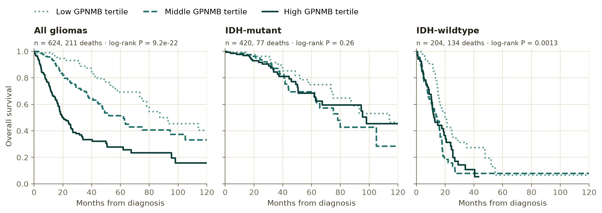
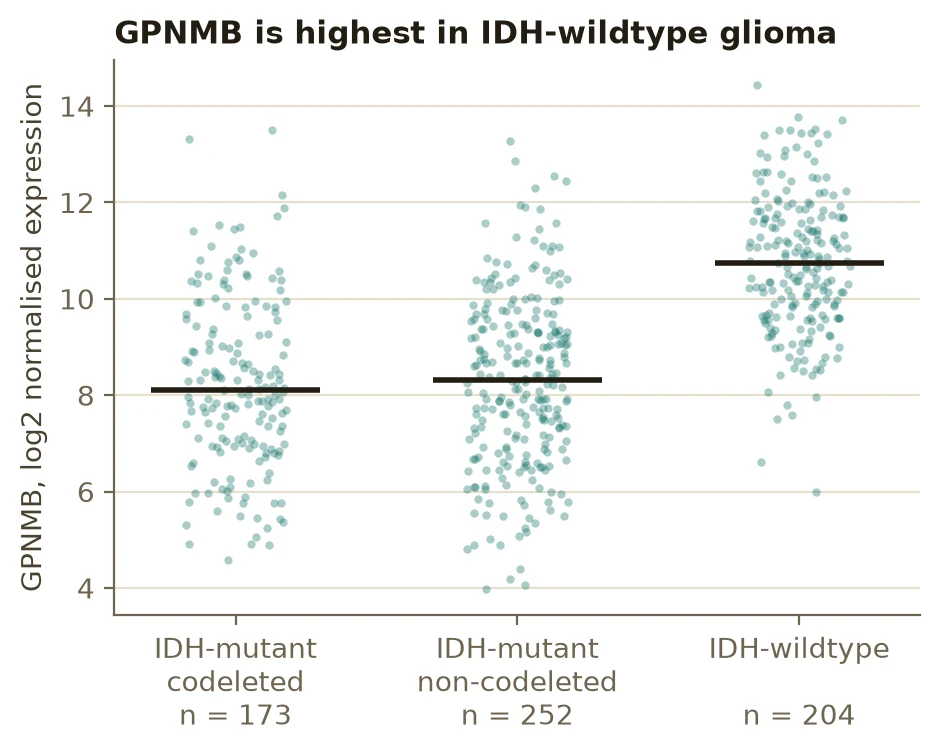
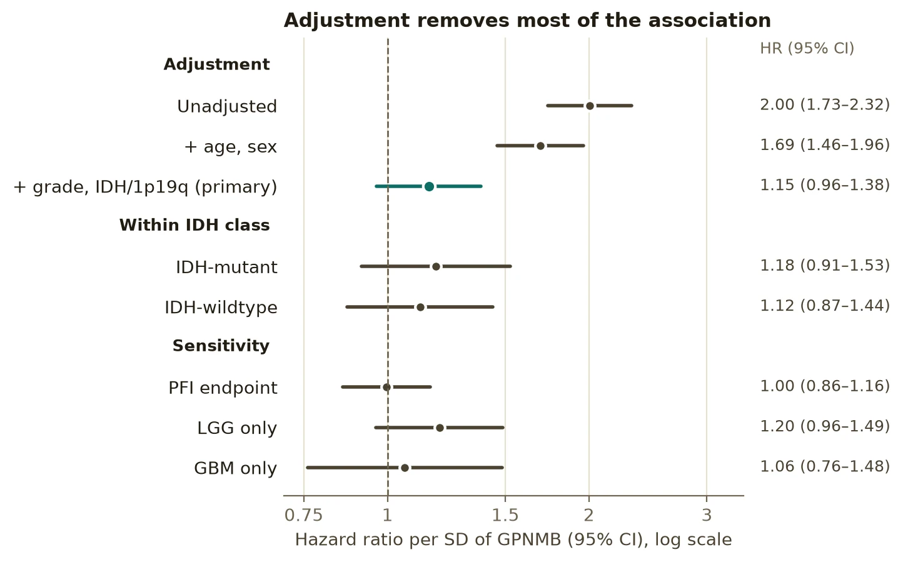

Biostatistics · Survival analysis
GPNMB and glioma survival: separating a prognostic signal from confounding
High GPNMB looks like a strong marker of poor survival in diffuse glioma. Is it, or does it just track tumour grade and IDH status? I answered that with a pre-specified Cox analysis of open-access TCGA data, built to show how much of a crude association survives adjustment.

Is GPNMB prognostic beyond what we already measure?
GPNMB has been reported as a marker of poor prognosis in glioma. A marker is only useful if it adds information beyond established predictors, which in diffuse glioma are WHO grade and molecular class (IDH mutation and 1p/19q codeletion). I asked whether GPNMB expression is associated with overall survival after accounting for them.
Rules fixed before looking at survival
All inputs are open access through the UCSC Xena Pan-Cancer Atlas hub: batch-corrected RNA-seq, curated survival endpoints from the TCGA Clinical Data Resource, and IDH/1p19q class derived from the Ceccarelli et al. glioma clusters. The analysis plan was written into config.yaml before any survival association was examined.
- Primary model. Cox regression of overall survival on GPNMB (per SD), adjusted for age, sex, WHO grade and molecular class.
- Model sequence. Unadjusted, then age and sex, then the primary model, to show what adjustment does to the estimate.
- Assumptions checked, not assumed. Schoenfeld-residual test of proportional hazards, with a pre-stated rule to stratify any violating categorical covariate; spline vs linear GPNMB by likelihood-ratio test.
- Effect modification. GPNMB × IDH interaction, plus estimates within each IDH class.
- Discrimination. Gain in Harrell’s C from adding GPNMB, optimism-corrected with 1,000 bootstrap resamples.
- No optimal cut-point. Kaplan–Meier by tertiles, descriptive only.
- Sensitivity. Progression-free interval, LGG only, GBM only.
GPNMB tracks the strongest predictor of survival
GPNMB is 2.4–2.6 log2 units (about five- to six-fold) higher in IDH-wildtype tumours (median 10.7 vs 8.1–8.3), and IDH-wildtype glioma has by far the worst survival. So any crude association between GPNMB and survival is partly an association with IDH status.

Adjustment removes most of the association

| Model | HR per SD (95% CI) | P |
|---|---|---|
| Unadjusted | 2.00 (1.73–2.32) | 4 × 10−21 |
| + age, sex | 1.69 (1.46–1.96) | 4 × 10−12 |
| + grade, IDH/1p19q (primary) | 1.15 (0.96–1.38) | 0.12 |
| Within IDH-mutant | 1.18 (0.91–1.53) | 0.20 |
| Within IDH-wildtype | 1.12 (0.87–1.44) | 0.38 |
| Progression-free interval | 1.00 (0.86–1.16) | 0.96 |
| LGG only | 1.20 (0.96–1.49) | 0.11 |
| GBM only | 1.06 (0.76–1.48) | 0.73 |
The model checks held up. No term violated proportional hazards (smallest Schoenfeld P = 0.18), so no stratification was needed. A spline did not fit better than a linear term (P = 0.15), and the effect did not differ by IDH status (interaction P = 0.97). Adding GPNMB raised Harrell’s C from 0.864 to 0.865, an optimism-corrected gain of 0.0009.
Why the unadjusted curves would have misled
Across all gliomas, GPNMB tertiles separate dramatically (log-rank P = 9 × 10−22). Within IDH-mutant tumours the separation is much weaker (P = 0.26). Within IDH-wildtype the curves still separate (P = 0.001), but that group mixes grade 2–3 tumours with GBM: the low-GPNMB third has 42 of 68 grade 2–3 tumours, against 26 of 68 in each of the other thirds. Adjusted for grade and age, the IDH-wildtype hazard ratio is 1.12 (0.87–1.44). Unadjusted curves alone would have overstated the evidence.
What this does and doesn’t show
What it supports
- GPNMB’s crude association with glioma survival is largely confounding by grade and IDH/1p19q status.
- GPNMB adds little prognostic information beyond those predictors in this cohort.
What it doesn’t show
- That GPNMB has no role in glioma: the interval still allows a modest independent effect (up to about 1.4 per SD).
- Which cells drive the signal: bulk RNA-seq mixes tumour and microenvironment, and GPNMB is high in myeloid cells.
- Much about GBM alone: most TCGA GBM were profiled on arrays, leaving 117 in the complete-case set.